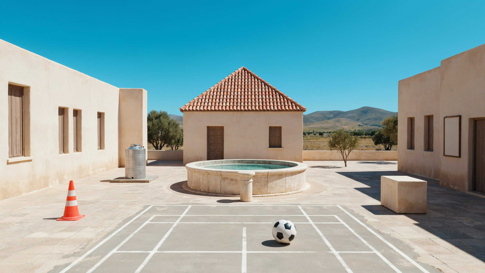
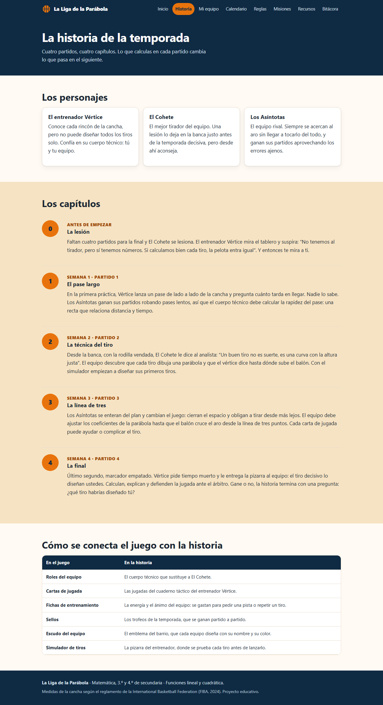
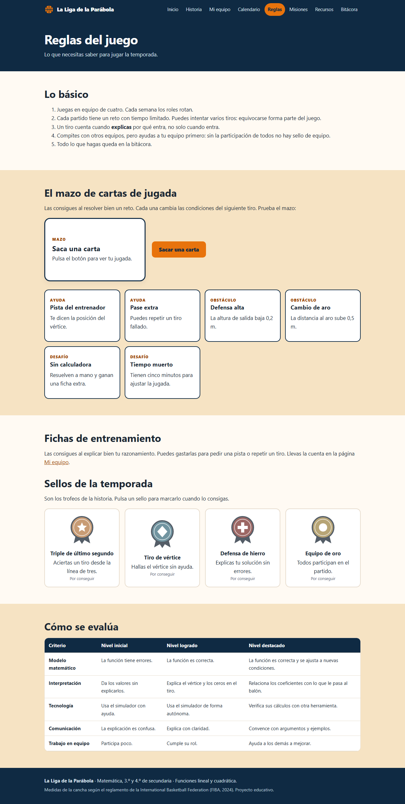
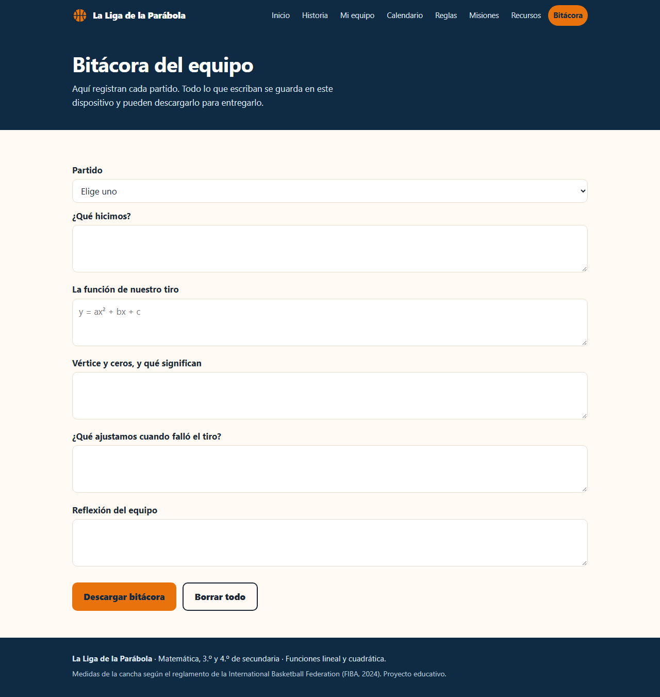

Portafolio de evidencias
Mi recorrido por la creación de contenidos digitales, el aprendizaje móvil y la gamificación en el aula.
Asignatura: Creación de Contenidos, Mobile Learning y Gamificación en el Aula

Introducción
Soy profesor de matemáticas e informática en secundaria. Este portafolio reúne lo que hice durante el curso para diseñar experiencias de aprendizaje apoyadas por tecnología.
Su propósito es mostrar, con evidencias reales, cómo uso herramientas digitales para crear materiales, cómo planifico un proyecto gamificado con narrativa y qué aprendí en cada paso. En cada evidencia comparto una reflexión sobre lo que aprendí, los desafíos que enfrenté y cómo puedo aplicarlo en un aula real.
Puedes recorrerlo con el menú superior: primero las evidencias, después mis habilidades digitales y mi filosofía educativa.
Mis evidencias de aprendizaje
| Tema | Evidencia | Formato |
|---|---|---|
| Creación de contenidos digitales | Videotutorial: actividad de geometría con una imagen creada con IA | Video, imágenes, PDF, enlaces |
| Planificación de un reto gamificado | La Liga de la Parábola: gamificación con narrativa | Sitio web, imágenes, PDF |
Evidencia 1 · Videotutorial con ayuda de la IA
Tema: Creación de contenidos digitales.
Diseñé una actividad de geometría para 2.º de ESO basada en una imagen de un patio escolar generada con inteligencia artificial en Ideogram. Los alumnos clasifican los objetos por su forma y calculan perímetros, áreas y longitudes de la circunferencia. Después grabé un videotutorial para que otros docentes aprendan el proceso paso a paso.
Ver en YouTube Enunciado para el alumno Entrega completa (PDF)
¿Qué aprendí haciendo esta actividad?
Aprendí que la inteligencia artificial acelera la creación de materiales, pero no sustituye mi criterio como docente. Diseñé un prompt preciso en Ideogram, indiqué las formas geométricas que necesitaba y lo ajusté con instrucciones de corrección hasta que todas fueran visibles. También practiqué planificar con un guion con tiempos, grabar la pantalla, editar en Clipchamp, publicar en YouTube y citar la herramienta en formato APA 7.
¿Qué desafíos enfrenté y cómo los superé?
El principal desafío fue que la herramienta no escribe cifras con exactitud. Lo resolví pidiendo una imagen sin textos ni números y colocando las medidas en el enunciado, de modo que el cálculo del perímetro y del área no dependa de la imagen. Además, comprobé que todas las formas necesarias aparecieran en el resultado.
¿Cómo puedo aplicar este recurso en un contexto educativo real?
Puedo usar la actividad con alumnos de secundaria para que observen su entorno e identifiquen figuras planas y cuerpos geométricos. Con otros docentes, el video sirve como ejemplo de uso responsable de la IA: revisar siempre lo que se genera y citar cada herramienta utilizada.
Reflexión de 165 palabras.
Evidencia 2 · La Liga de la Parábola
Tema: Planificación de un reto gamificado.
Es una gamificación con narrativa de las funciones lineal y cuadrática para 3.º y 4.º de secundaria. Los estudiantes son el cuerpo técnico de un equipo de baloncesto que llega a la final del torneo del barrio sin su mejor tirador, y cada tiro se diseña con matemática antes de lanzarlo. Se organiza en cuatro partidos, uno por semana, con roles, cartas de jugada, fichas de entrenamiento, sellos y un simulador de tiros. Las medidas de la cancha provienen del reglamento de la FIBA (2024).
Abrir el sitio del proyecto Planificación completa (PDF)








¿Qué aprendí haciendo esta actividad?
Aprendí a distinguir la gamificación profunda de un simple sistema de puntos, insignias y tablas de posiciones. La narrativa es lo que da sentido a cada tarea: el equipo necesita calcular bien cada tiro para llegar a la final. También aprendí a presentar el proyecto en un sitio web que se abre desde el teléfono o la computadora, con un simulador donde se modifican los coeficientes de la parábola.
¿Qué desafíos enfrenté y cómo los superé?
El reto fue integrar roles, cartas de jugada, fichas, sellos y simulador sin que parecieran recompensas externas. Lo resolví haciendo que cada componente formara parte de la historia y justificándolo según las necesidades de un grupo poco motivado, que se distrae con facilidad.
¿Cómo puedo aplicar este recurso en un contexto educativo real?
Puedo aplicarlo en una unidad de varias semanas con estudiantes de secundaria, adaptando la narrativa a sus intereses y manteniendo una rúbrica compartida desde el primer día. La estructura de cuatro partidos sirve también para otros temas de matemática.
Reflexión de 151 palabras.
Habilidades digitales
| Aplicación o recurso | Qué hice con ella | Utilidad en el aprendizaje |
|---|---|---|
| Ideogram | Generé la imagen del patio escolar a partir de un prompt. | Crear recursos visuales didácticos propios. |
| Google Docs | Redacté el enunciado y lo compartí con un enlace de acceso libre. | Compartir contenido con estudiantes y colegas. |
| Grabadora de pantalla de Windows y Clipchamp | Grabé y edité el videotutorial. | Producir explicaciones en video. |
| YouTube | Publiqué el videotutorial. | Distribuir contenido audiovisual con un enlace estable. |
| Procesador de textos (Word) | Usé estilos, índices, referencias cruzadas y citas. | Organizar documentos largos y citar fuentes. |
| Sitio web propio (GitHub Pages) | Publiqué La Liga de la Parábola en ocho páginas. | Organizar actividades, reglas y seguimiento del proyecto. |
| Simulador de tiros y GeoGebra | Probé parábolas modificando sus coeficientes. | Retroalimentación inmediata y autonomía del estudiante. |
| Canva | Diseñé las cartas de jugada impresas. | Crear componentes de gamificación. |
Filosofía educativa
Creo que los estudiantes aprenden mejor cuando construyen conocimiento nuevo a partir de lo que ya saben y del mundo que los rodea. Una clase empieza con un estímulo, como un problema de tráfico, un juego o un conjunto de datos, que los alumnos quieren entender. Prueban ideas, buscan patrones y solo después nombran los métodos de manera formal. Mi rol es diseñar la experiencia y acompañar; el del estudiante es ser protagonista de su propio aprendizaje.
La tecnología ocupa un lugar de apoyo: me permite crear recursos propios, ofrecer retroalimentación inmediata y conectar el aula con situaciones reales, pero no sustituye mi creatividad ni mi juicio crítico. Por eso reviso lo que genera la inteligencia artificial y cito las herramientas que uso.
Mi meta es diseñar experiencias digitales de aprendizaje, como la gamificación con narrativa y los videotutoriales, que den a los estudiantes una razón visible para esforzarse y les permitan usar la matemática como herramienta para tomar decisiones.
Referencias
- Anthropic. (2026). Claude [Modelo de lenguaje de gran tamaño]. https://claude.ai
- Deterding, S., Dixon, D., Khaled, R. y Nacke, L. (2011). From game design elements to gamefulness: Defining “gamification”. En Proceedings of the 15th International Academic MindTrek Conference (pp. 9-15). ACM. https://doi.org/10.1145/2181037.2181040
- Ideogram. (2026). Ideogram (versión 4.5) [Generador de imágenes con inteligencia artificial]. https://ideogram.ai
- International Basketball Federation. (2024). Official basketball rules 2024. https://assets.fiba.basketball/image/upload/documents-corporate-fiba-official-rules-2024-v10.pdf
- Kapp, K. M. (2012). The gamification of learning and instruction: Game-based methods and strategies for training and education. Pfeiffer.
- Ryan, R. M. y Deci, E. L. (2000). Self-determination theory and the facilitation of intrinsic motivation, social development, and well-being. American Psychologist, 55(1), 68-78. https://doi.org/10.1037/0003-066X.55.1.68
- Werbach, K. y Hunter, D. (2012). For the win: How game thinking can revolutionize your business. Wharton Digital Press.